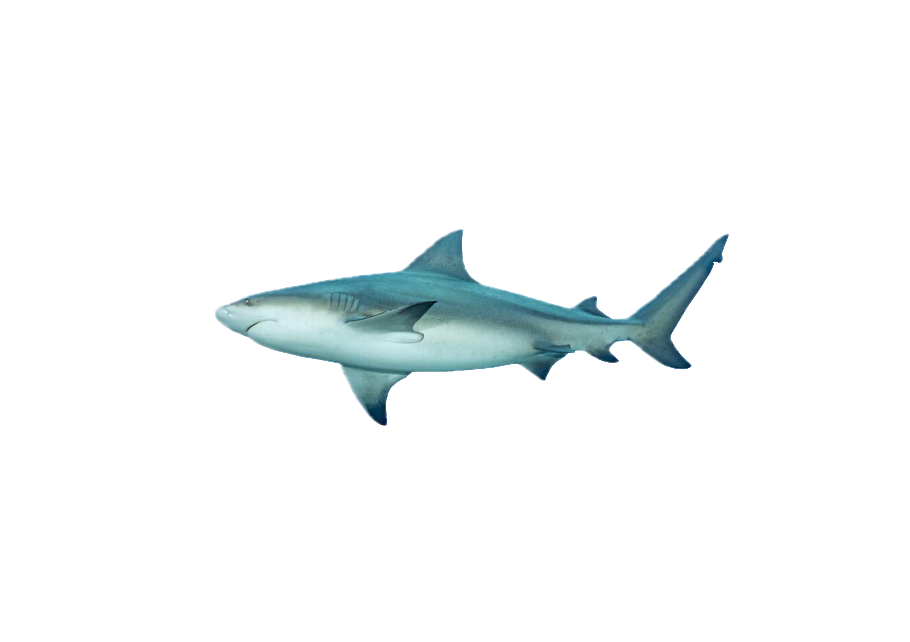
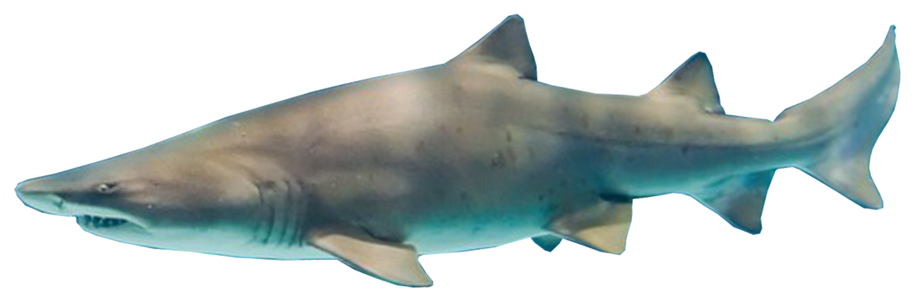
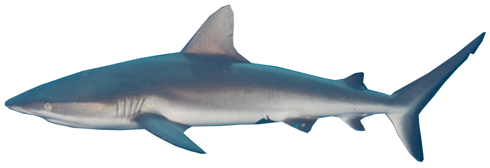
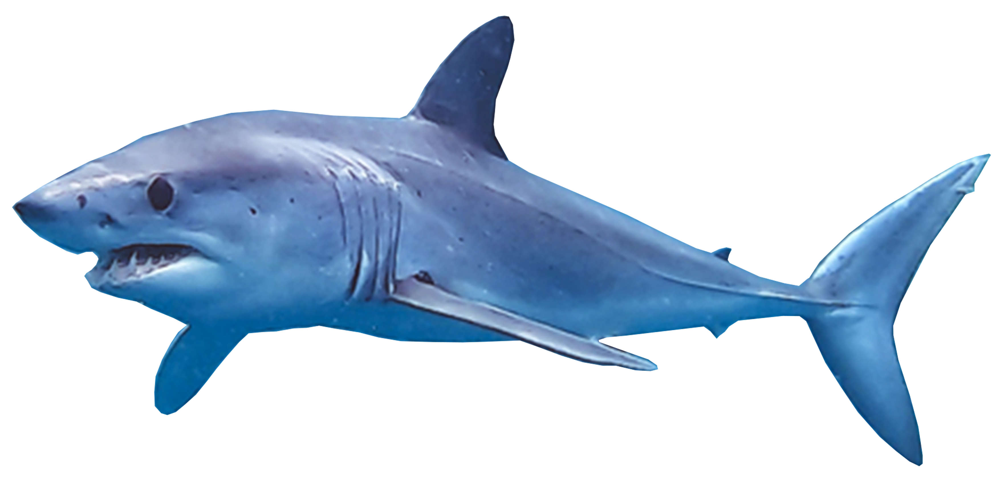
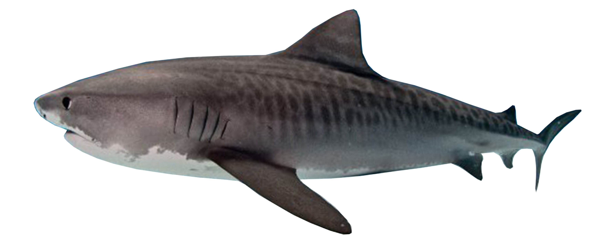
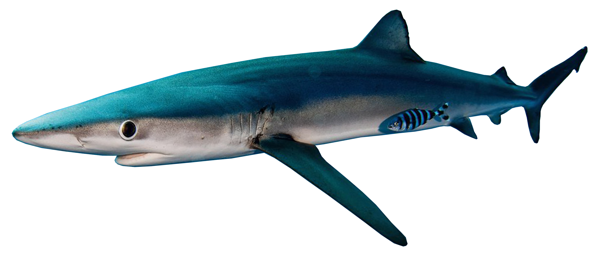
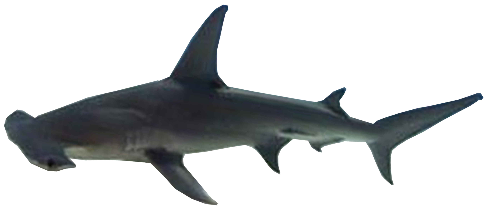

Stierhaai

Deze haai zwemt tot wel 150 meter diep
Hier vind je verschillende soorten haaien en zie je ook hoe diep zij kunnen zwemmen. Scroll maar lekker verder!
Of ga hier terug naar de homepagina
Deze haai zwemt tot wel 150 meter diep

Deze haai zwemt tot wel 200 meter diep

Deze haai zwemt tot wel 280 meter diep

Deze haai zwemt tot wel 500 meter diep

Deze haai zwemt tot ongeveer 600 meter diep

Deze haai zwemt tot meer dan 600 meter diep

Mijn persoonlijke favoriet. Deze zwemt tot ruim 800 meter diep

Deze haai zwemt tot wel 1.000 meter diep